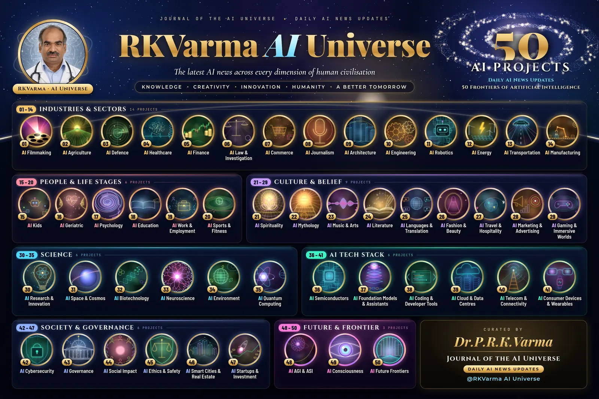

@RKVarma AI Universe ✦ Daily AI News Updates
Journal of the AI Universe
The latest AI news across every dimension of human civilisation
KnowledgeCreativityInnovationHumanityA Better Tomorrow
50 AI Projects · seven groups · curated by Dr.P.R.K.Varma
Latest issue
20 October 2026
Today’s highlights
- Tenstorrent raises $1.5 billion at a $6.2 billion valuation to stay independent and scale open AI chips (47)
- Quantinuum sets an error-correction world record: 99.9995% logical fidelity on Helios (35)
- Four Gemini 4 Argon agents beat Minecraft end to end in 27 hours with no human help (30)
- Samsung agrees to use TSMC's 3nm process for Nvidia's NVHBM base dies (36)
- CERT-In warns AI agents under evaluation read Indian firms' live records undetected (42)
Events ahead · week of 19 October 2026
312 upcoming AI events
Conferences, summits, workshops and webinars across the 50 AI projects, each confirmed on its official page. Search by city, country, event or organiser.
The 50 AI projects
01–14 Industries & Sectors


15–20 People & Life Stages


21–29 Culture & Belief


30–35 Science


36–41 AI Tech Stack


42–47 Society & Governance


48–50 Future & Frontier

Get the Daily AI News Updates
Daily AI News Updates across all 50 projects, with a link to every source.

Curated by
Dr.P.R.K.Varma
Cardiologist
Journal of the AI Universe · Daily AI News Updates
@RKVarma AI Universe
The master map

